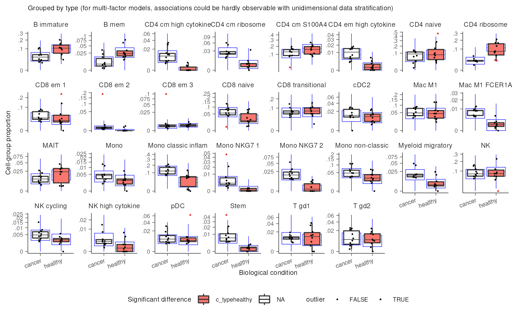
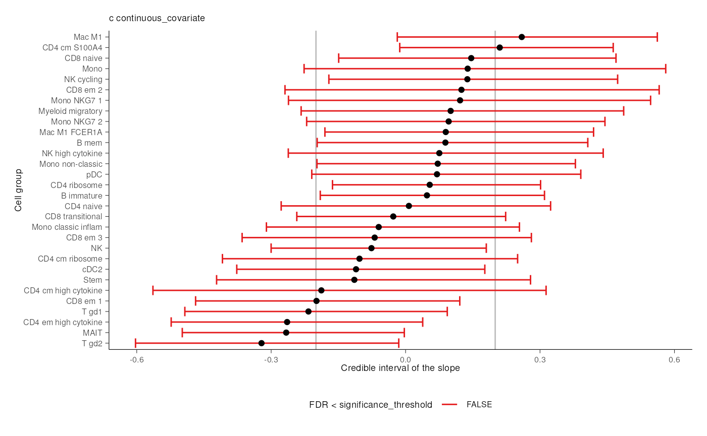

New sccomp framework
Stefano Mangiola
2023-12-11
Source:vignettes/new_framework.Rmd
new_framework.Rmd


We announce the new tidy and modular interface for a
sccomp, which improves modularity, and clarity. The main
change is the modularisation of sccomp in functions which
can be linked with the pipe operator |>.
| Function | Description |
|---|---|
Estimation: sccomp_stimate()
|
which is usually run once in the analysis (per model). |
Testing: sccomp_test()
|
which candy run multiple times, depending on how many contrasts you want to test (e.g. age, untreated vs treated). |
Outlier removal: sccomp_remove_outliers()
|
which is usually run once after sccomp_estimate() in
case you want to produce estimates not influenced by outlier data
points. |
Unwanted variation removal:
sccomp_remove_unwanted_variation()
|
which is run after sccomp_estimate() and produces a
dataset that just preserve the variability of your factor of
interest. |
Data replication: sccomp_replicate()
|
which is run after sccomp_estimate() and produces a
dataset representing the theoretical data distribution according to the
model (from the posterior distribution). |
Plotting: plot()
|
which is run after sccomp_test and outputs a series of
summary plots. |
A reminder: what is sccomp
sccomp is a statistical model developed for differential
variability analysis in compositional data, primarily used in cellular
omics fields like single-cell genomics, proteomics, and microbiomics
(Mangiola et al. 2023). It addresses limitations of existing methods in
differential abundance analysis by incorporating several advanced
features. sccomp effectively models compositional count
data properties, which were previously not adequately addressed, and
tackles cell-group-specific differential variability. This model uses a
constrained Beta-binomial distribution to enable more precise analyses.
Key capabilities of sccomp include improved differential
abundance analyses through cross-sample information borrowing, outlier
identification and exclusion, realistic data simulation, and
facilitating cross-study knowledge transfer. By incorporating these
features, sccomp provides a more comprehensive and accurate
framework for analyzing cellular omics data, identifying crucial
biological drivers such as disease progression markers in cancer and
pathogen infection.
Installation
Bioconductor
if (!requireNamespace("BiocManager")) install.packages("BiocManager")
BiocManager::install("sccomp")Github
devtools::install_github("stemangiola/sccomp")Deprecation of the function sccomp_glm()
The new framework
outlier_free_estimate =
seurat_obj |>
# Estimate
sccomp_estimate(
formula_composition = ~ type + continuous_covariate,
.sample = sample,
.cell_group = cell_group,
cores = 1
) |>
# Remove outliers
sccomp_remove_outliers(cores = 1) ##
## SAMPLING FOR MODEL 'glm_multi_beta_binomial' NOW (CHAIN 1).
## Chain 1:
## Chain 1: Gradient evaluation took 0.00032 seconds
## Chain 1: 1000 transitions using 10 leapfrog steps per transition would take 3.2 seconds.
## Chain 1: Adjust your expectations accordingly!
## Chain 1:
## Chain 1:
## Chain 1: Iteration: 1 / 4300 [ 0%] (Warmup)
## Chain 1: Iteration: 301 / 4300 [ 7%] (Sampling)
## Chain 1: Iteration: 1300 / 4300 [ 30%] (Sampling)
## Chain 1: Iteration: 2300 / 4300 [ 53%] (Sampling)
## Chain 1: Iteration: 3300 / 4300 [ 76%] (Sampling)
## Chain 1: Iteration: 4300 / 4300 [100%] (Sampling)
## Chain 1:
## Chain 1: Elapsed Time: 2.18 seconds (Warm-up)
## Chain 1: 16.916 seconds (Sampling)
## Chain 1: 19.096 seconds (Total)
## Chain 1:
##
## SAMPLING FOR MODEL 'glm_multi_beta_binomial' NOW (CHAIN 1).
## Chain 1:
## Chain 1: Gradient evaluation took 0.000278 seconds
## Chain 1: 1000 transitions using 10 leapfrog steps per transition would take 2.78 seconds.
## Chain 1: Adjust your expectations accordingly!
## Chain 1:
## Chain 1:
## Chain 1: Iteration: 1 / 20299 [ 0%] (Warmup)
## Chain 1: Iteration: 301 / 20299 [ 1%] (Sampling)
## Chain 1: Iteration: 1300 / 20299 [ 6%] (Sampling)
## Chain 1: Iteration: 2300 / 20299 [ 11%] (Sampling)
## Chain 1: Iteration: 3300 / 20299 [ 16%] (Sampling)
## Chain 1: Iteration: 4300 / 20299 [ 21%] (Sampling)
## Chain 1: Iteration: 5300 / 20299 [ 26%] (Sampling)
## Chain 1: Iteration: 6300 / 20299 [ 31%] (Sampling)
## Chain 1: Iteration: 7300 / 20299 [ 35%] (Sampling)
## Chain 1: Iteration: 8300 / 20299 [ 40%] (Sampling)
## Chain 1: Iteration: 9300 / 20299 [ 45%] (Sampling)
## Chain 1: Iteration: 10300 / 20299 [ 50%] (Sampling)
## Chain 1: Iteration: 11300 / 20299 [ 55%] (Sampling)
## Chain 1: Iteration: 12300 / 20299 [ 60%] (Sampling)
## Chain 1: Iteration: 13300 / 20299 [ 65%] (Sampling)
## Chain 1: Iteration: 14300 / 20299 [ 70%] (Sampling)
## Chain 1: Iteration: 15300 / 20299 [ 75%] (Sampling)
## Chain 1: Iteration: 16300 / 20299 [ 80%] (Sampling)
## Chain 1: Iteration: 17300 / 20299 [ 85%] (Sampling)
## Chain 1: Iteration: 18300 / 20299 [ 90%] (Sampling)
## Chain 1: Iteration: 19300 / 20299 [ 95%] (Sampling)
## Chain 1: Iteration: 20299 / 20299 [100%] (Sampling)
## Chain 1:
## Chain 1: Elapsed Time: 2.157 seconds (Warm-up)
## Chain 1: 113.271 seconds (Sampling)
## Chain 1: 115.428 seconds (Total)
## Chain 1:
##
## SAMPLING FOR MODEL 'glm_multi_beta_binomial' NOW (CHAIN 1).
## Chain 1:
## Chain 1: Gradient evaluation took 0.000283 seconds
## Chain 1: 1000 transitions using 10 leapfrog steps per transition would take 2.83 seconds.
## Chain 1: Adjust your expectations accordingly!
## Chain 1:
## Chain 1:
## Chain 1: Iteration: 1 / 4300 [ 0%] (Warmup)
## Chain 1: Iteration: 301 / 4300 [ 7%] (Sampling)
## Chain 1: Iteration: 1300 / 4300 [ 30%] (Sampling)
## Chain 1: Iteration: 2300 / 4300 [ 53%] (Sampling)
## Chain 1: Iteration: 3300 / 4300 [ 76%] (Sampling)
## Chain 1: Iteration: 4300 / 4300 [100%] (Sampling)
## Chain 1:
## Chain 1: Elapsed Time: 2.237 seconds (Warm-up)
## Chain 1: 16.781 seconds (Sampling)
## Chain 1: 19.018 seconds (Total)
## Chain 1:
# Test
outlier_free_estimate |>
sccomp_test(contrasts = "typehealthy") ## # A tibble: 30 × 18
## cell_group parameter factor c_lower c_effect c_upper c_pH0 c_FDR c_n_eff
## <chr> <chr> <chr> <dbl> <dbl> <dbl> <dbl> <dbl> <dbl>
## 1 B immature typeheal… type 0.909 1.40 1.88 0 0 7756.
## 2 B mem typeheal… type 1.05 1.72 2.32 0 0 5864.
## 3 CD4 cm S1… typeheal… type 0.599 0.990 1.42 5.00e-4 1.25e-4 6439.
## 4 CD4 cm hi… typeheal… type -3.10 -1.96 -0.953 2.50e-4 5.00e-5 4336.
## 5 CD4 cm ri… typeheal… type -1.76 -1.06 -0.383 5.25e-3 1.19e-3 4457.
## 6 CD4 em hi… typeheal… type -2.22 -1.38 -0.608 1.25e-3 2.86e-4 4519.
## 7 CD4 naive typeheal… type 0.201 0.821 1.43 2.48e-2 6.44e-3 6459.
## 8 CD4 ribos… typeheal… type 1.51 2.05 2.55 0 0 5409.
## 9 CD8 em 1 typeheal… type -0.559 0.115 0.683 6.08e-1 1.26e-1 5656.
## 10 CD8 em 2 typeheal… type -2.15 -0.979 0.00627 6.75e-2 1.76e-2 5074.
## # ℹ 20 more rows
## # ℹ 9 more variables: c_R_k_hat <dbl>, v_lower <dbl>, v_effect <dbl>,
## # v_upper <dbl>, v_pH0 <dbl>, v_FDR <dbl>, v_n_eff <dbl>, v_R_k_hat <dbl>,
## # count_data <list>Replaces the old framework (that now will receive a deprecation warning)
seurat_obj |>
# Estimate
sccomp_glm(
formula_composition = ~ type + continuous_covariate,
.sample = sample,
.cell_group = cell_group,
check_outliers = TRUE,
contrasts = "typehealthy",
cores = 1
) New functionalities
Removal of unwanted variation.
For visualisation purposes, we can select factor of
interest we would like to preserve the effect for, end exclude all the
rest. For example, if we want to produce a dataset with just the
type effect, we can execute
outlier_free_estimate |>
sccomp_remove_unwanted_variation(~ type)## sccomp says: calculating residuals## sccomp says: regressing out unwanted factors## # A tibble: 600 × 5
## sample cell_group adjusted_proportion adjusted_counts logit_residuals
## <chr> <chr> <dbl> <dbl> <dbl>
## 1 10x_6K B immature 0.0544 255. -0.755
## 2 10x_8K B immature 0.143 1073. 0.321
## 3 GSE115189 B immature 0.112 263. 0.0223
## 4 SCP345_580 B immature 0.0899 518. -0.205
## 5 SCP345_860 B immature 0.150 965. 0.378
## 6 SCP424_pbmc1 B immature 0.112 300. -0.0223
## 7 SCP424_pbmc2 B immature 0.200 598. 0.715
## 8 SCP591 B immature 0.0246 14.0 -1.57
## 9 SI-GA-E5 B immature 0.0247 103. -0.694
## 10 SI-GA-E7 B immature 0.0991 727. 0.792
## # ℹ 590 more rowsPlotting
The bloating functionalities have been improved. Now, both discrete and continuous variables can be visualised overlaying the to reticle data distribution from the model. This helps the user understanding whether the model is descriptively adequate to the data.
For example, if the theoretical data distribution from the
sccomp does not overlap with the observed data
distribution, this is an indication that the probability distribution
used by sccomp is not suitable for the data or a different
model (design matrix) should be used.
outlier_free_estimate |>
sccomp_test(contrasts = "typehealthy") |>
plot()## $boxplot
## $boxplot[[1]]
##
##
## $credible_intervals_1DNow plotting the test against the continuous covariate
outlier_free_estimate |>
sccomp_test(contrasts = "continuous_covariate") |>
plot()## $boxplot
## $boxplot[[1]]##
##
## $credible_intervals_1D
## R Under development (unstable) (2023-11-22 r85609)
## Platform: x86_64-pc-linux-gnu
## Running under: Ubuntu 22.04.3 LTS
##
## Matrix products: default
## BLAS: /usr/lib/x86_64-linux-gnu/openblas-pthread/libblas.so.3
## LAPACK: /usr/lib/x86_64-linux-gnu/openblas-pthread/libopenblasp-r0.3.20.so; LAPACK version 3.10.0
##
## locale:
## [1] LC_CTYPE=en_US.UTF-8 LC_NUMERIC=C
## [3] LC_TIME=en_US.UTF-8 LC_COLLATE=en_US.UTF-8
## [5] LC_MONETARY=en_US.UTF-8 LC_MESSAGES=en_US.UTF-8
## [7] LC_PAPER=en_US.UTF-8 LC_NAME=C
## [9] LC_ADDRESS=C LC_TELEPHONE=C
## [11] LC_MEASUREMENT=en_US.UTF-8 LC_IDENTIFICATION=C
##
## time zone: UTC
## tzcode source: system (glibc)
##
## attached base packages:
## [1] stats graphics grDevices utils datasets methods base
##
## other attached packages:
## [1] sccomp_1.7.3 BiocStyle_2.31.0
##
## loaded via a namespace (and not attached):
## [1] bitops_1.0-7 gridExtra_2.3
## [3] inline_0.3.19 rlang_1.1.2
## [5] magrittr_2.0.3 matrixStats_1.1.0
## [7] compiler_4.4.0 mgcv_1.9-0
## [9] loo_2.6.0 systemfonts_1.0.5
## [11] vctrs_0.6.5 stringr_1.5.1
## [13] pkgconfig_2.0.3 crayon_1.5.2
## [15] fastmap_1.1.1 XVector_0.43.0
## [17] labeling_0.4.3 utf8_1.2.4
## [19] rmarkdown_2.25 tzdb_0.4.0
## [21] ragg_1.2.6 purrr_1.0.2
## [23] xfun_0.41 zlibbioc_1.49.0
## [25] cachem_1.0.8 GenomeInfoDb_1.39.1
## [27] jsonlite_1.8.8 highr_0.10
## [29] DelayedArray_0.29.0 parallel_4.4.0
## [31] R6_2.5.1 RColorBrewer_1.1-3
## [33] bslib_0.6.1 stringi_1.8.2
## [35] StanHeaders_2.32.2 parallelly_1.36.0
## [37] boot_1.3-28.1 GenomicRanges_1.55.1
## [39] jquerylib_0.1.4 Rcpp_1.0.11
## [41] bookdown_0.37 rstan_2.32.3
## [43] SummarizedExperiment_1.33.1 knitr_1.45
## [45] future.apply_1.11.0 readr_2.1.4
## [47] IRanges_2.37.0 splines_4.4.0
## [49] Matrix_1.6-4 tidyselect_1.2.0
## [51] abind_1.4-5 yaml_2.3.7
## [53] codetools_0.2-19 curl_5.2.0
## [55] listenv_0.9.0 pkgbuild_1.4.3
## [57] lattice_0.22-5 tibble_3.2.1
## [59] withr_2.5.2 Biobase_2.63.0
## [61] evaluate_0.23 future_1.33.0
## [63] desc_1.4.3 RcppParallel_5.1.7
## [65] pillar_1.9.0 BiocManager_1.30.22
## [67] MatrixGenerics_1.15.0 stats4_4.4.0
## [69] generics_0.1.3 sp_2.1-2
## [71] RCurl_1.98-1.13 S4Vectors_0.41.2
## [73] hms_1.1.3 ggplot2_3.4.4
## [75] rstantools_2.3.1.1 munsell_0.5.0
## [77] scales_1.3.0 globals_0.16.2
## [79] glue_1.6.2 tools_4.4.0
## [81] forcats_1.0.0 fs_1.6.3
## [83] dotCall64_1.1-1 grid_4.4.0
## [85] tidyr_1.3.0 QuickJSR_1.0.8
## [87] colorspace_2.1-0 SingleCellExperiment_1.25.0
## [89] nlme_3.1-164 GenomeInfoDbData_1.2.11
## [91] patchwork_1.1.3 cli_3.6.1
## [93] textshaping_0.3.7 spam_2.10-0
## [95] fansi_1.0.6 S4Arrays_1.3.1
## [97] dplyr_1.1.4 V8_4.4.1
## [99] gtable_0.3.4 sass_0.4.8
## [101] digest_0.6.33 progressr_0.14.0
## [103] BiocGenerics_0.49.1 SparseArray_1.3.1
## [105] ggrepel_0.9.4 farver_2.1.1
## [107] SeuratObject_5.0.1 memoise_2.0.1
## [109] htmltools_0.5.7 pkgdown_2.0.7
## [111] lifecycle_1.0.4